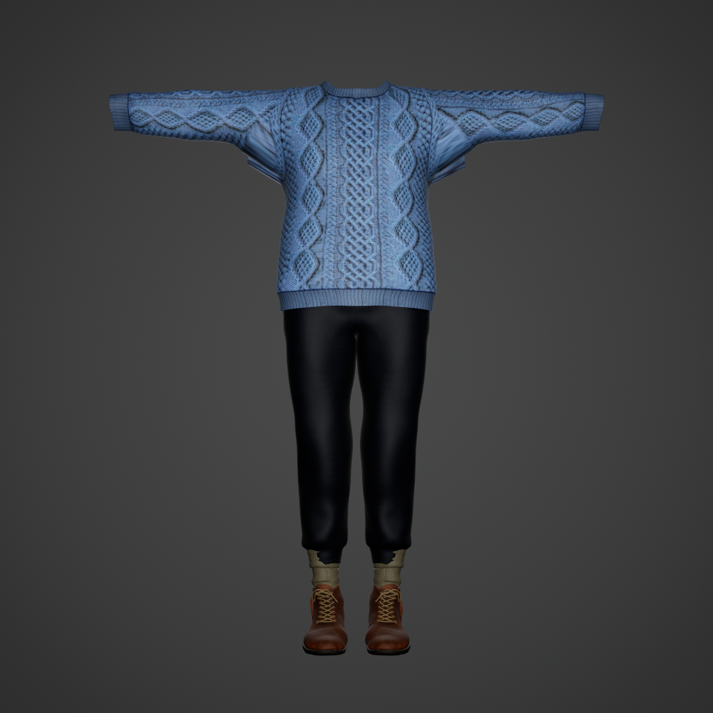
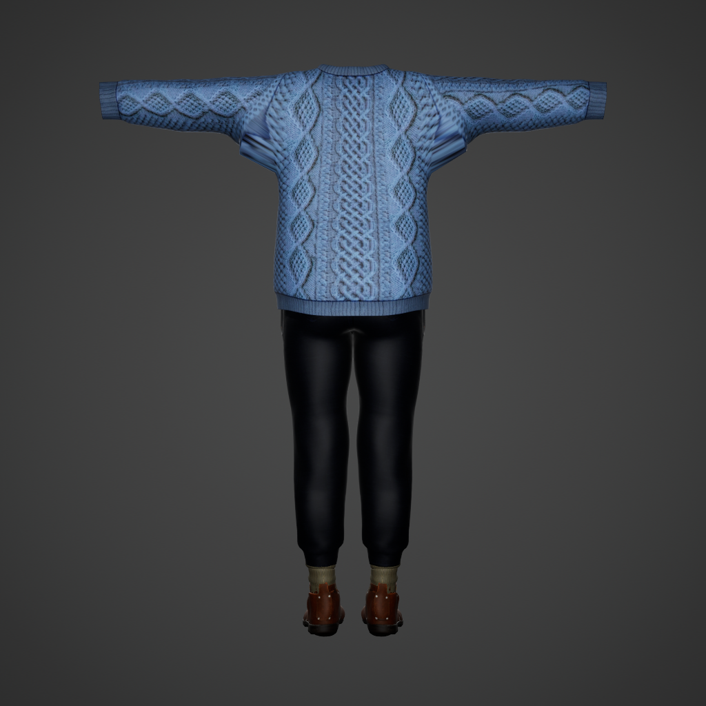
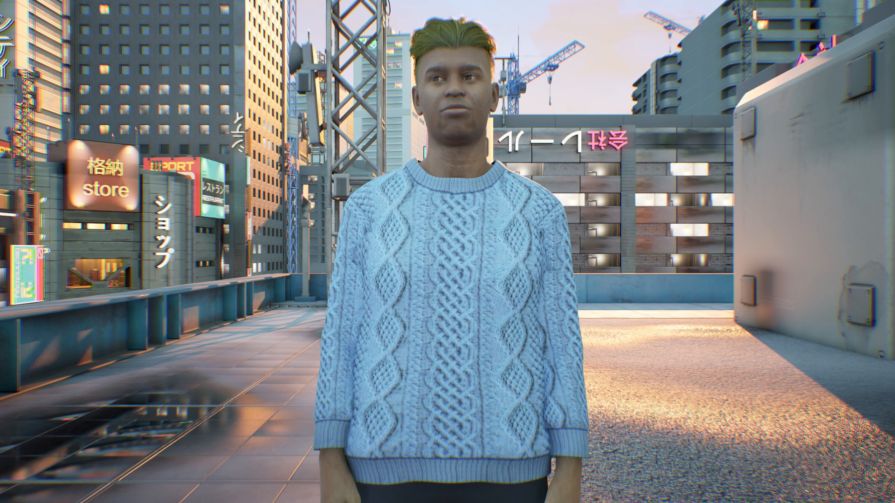
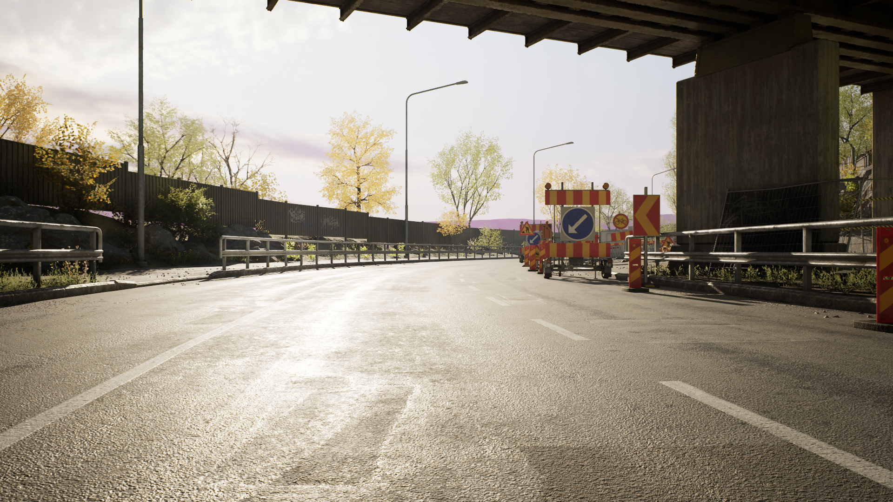

每个模型使用自己的实际生成结果继续编辑。第三轮从各自的视频 1 出发，保留全身镜头；没有用真值视频替代生成历史。主配置 A 直接复用已有结果。
| 模型 / 内容 | 视频 1：换服装，源为 0 | 视频 2：正面半身，源为 1 | 视频 3：换场景，源为 1 |
|---|---|---|---|
| LTX 主配置 A（已有结果） 3/3 | 实际从视频 0 编辑 ✓ 实际编辑指令Dress the person in the complete outfit shown from the front and back in the reference images, consisting of the top, the bottoms, and the footwear. This replaces the current outfit entirely, rather than adding items to it. Preserve everything else in the video. The first reference image shows the front view of the complete outfit, and the second shows its back view. | 实际从视频 1 编辑 ✓ 实际编辑指令Switch the camera setup to an upper-body shot from the front. Change only the camera setup. Preserve the person's appearance, expression, and action, along with the existing scene. Use the provided reference image to determine the viewing direction, subject placement, and framing at the start of the edited video. Follow the camera setup and movement described above, and preserve the timing and progression of the action in the source video. | 实际从视频 1 编辑 ✓ 实际编辑指令Replace the scene in the video with the environment shown in the reference image. Change only the environment and its lighting effects on the person. Retain the person's identity, appearance, expression, and action, along with the existing camera framing and movement. |
| LTX 蒸馏基座，无训练 LoRA 3/3 | 实际从视频 0 编辑 ✓ 实际编辑指令Dress the person in the complete outfit shown from the front and back in the reference images, consisting of the top, the bottoms, and the footwear. This replaces the current outfit entirely, rather than adding items to it. Preserve everything else in the video. The first reference image shows the front view of the complete outfit, and the second shows its back view. | 实际从视频 1 编辑 ✓ 实际编辑指令Switch the camera setup to an upper-body shot from the front. Change only the camera setup. Preserve the person's appearance, expression, and action, along with the existing scene. Use the provided reference image to determine the viewing direction, subject placement, and framing at the start of the edited video. Follow the camera setup and movement described above, and preserve the timing and progression of the action in the source video. | 实际从视频 1 编辑 ✓ 实际编辑指令Replace the scene in the video with the environment shown in the reference image. Change only the environment and its lighting effects on the person. Retain the person's identity, appearance, expression, and action, along with the existing camera framing and movement. |
| VACE，4 步加速 3/3 | 实际从视频 0 编辑 ✓ 实际编辑指令Dress the person in the complete outfit shown from the front and back in the reference images, consisting of the top, the bottoms, and the footwear. This replaces the current outfit entirely, rather than adding items to it. Preserve everything else in the video. The first reference image shows the front view of the complete outfit, and the second shows its back view. | 实际从视频 1 编辑 ✓ 实际编辑指令Switch the camera setup to an upper-body shot from the front. Change only the camera setup. Preserve the person's appearance, expression, and action, along with the existing scene. Use the provided reference image to determine the viewing direction, subject placement, and framing at the start of the edited video. Follow the camera setup and movement described above, and preserve the timing and progression of the action in the source video. | 实际从视频 1 编辑 ✓ 实际编辑指令Replace the scene in the video with the environment shown in the reference image. Change only the environment and its lighting effects on the person. Retain the person's identity, appearance, expression, and action, along with the existing camera framing and movement. |
| MiniMax H3，8 步加速 3/3 | 实际从视频 0 编辑 ✓ 实际编辑指令Dress the person in the complete outfit shown from the front and back in the reference images, consisting of the top, the bottoms, and the footwear. This replaces the current outfit entirely, rather than adding items to it. Preserve everything else in the video. The first reference image shows the front view of the complete outfit, and the second shows its back view. | 实际从视频 1 编辑 ✓ 实际编辑指令Switch the camera setup to an upper-body shot from the front. Change only the camera setup. Preserve the person's appearance, expression, and action, along with the existing scene. Use the provided reference image to determine the viewing direction, subject placement, and framing at the start of the edited video. Follow the camera setup and movement described above, and preserve the timing and progression of the action in the source video. | 实际从视频 1 编辑 ✓ 实际编辑指令Replace the scene in the video with the environment shown in the reference image. Change only the environment and its lighting effects on the person. Retain the person's identity, appearance, expression, and action, along with the existing camera framing and movement. |
| 对应真值视频 | |||
| 指令和参考素材 | 请基于输入视频进行以下编辑：为人物换上参考图中以正面和背面展示、由上衣、下装、鞋子组成的完整穿搭。这是对当前穿搭的整体替换，而不是在原穿搭上添加单件。视频中的其他内容保持不变。第一张参考图展示整套穿搭的正面，第二张展示背面。   完整用户指令Start from the original video (video 0). Using the provided source video, apply the following edit: Dress the person in the complete outfit shown from the front and back in the reference images, consisting of the top, the bottoms, and the footwear. This replaces the current outfit entirely, rather than adding items to it. Preserve everything else in the video. The first reference image shows the front view of the complete outfit, and the second shows its back view. | 请基于输入视频进行以下编辑：请更换拍摄人物的镜头，改用从人物正面拍摄的上半身镜头。仅改变镜头设置。保留人物的外观、表情和动作，以及现有场景。请参考提供的图片确定编辑后视频开始时的观察方向、人物位置和取景范围。镜头设置及之后的运动按前述要求执行，并保留输入视频中人物动作的时间顺序和过程。  完整用户指令Continue editing the outfit-change result (video 1). Using the provided source video, apply the following edit: Please switch the camera setup to an upper-body shot from the front. Change only the camera setup. Preserve the person's appearance, expression, and action, along with the existing scene. Use the provided reference image to determine the viewing direction, subject placement, and framing at the start of the edited video. Follow the camera setup and movement described above, and preserve the timing and progression of the action in the source video. | 请基于输入视频进行以下编辑：请将视频中的场景替换为参考图中的环境。只改变环境及其对人物产生的光照效果。保留人物的身份、外观、表情和动作，以及原有的镜头构图与运动。  完整用户指令Return to the outfit-change result (video 1), before the camera edit. Using the provided source video, apply the following edit: Please replace the scene in the video with the environment shown in the reference image. Change only the environment and its lighting effects on the person. Retain the person's identity, appearance, expression, and action, along with the existing camera framing and movement. |
更新：2026-11-16T20:08:17.929776+08:00